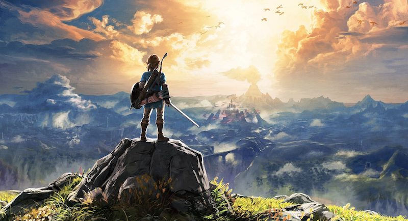

Articles
-

ARMS
Arms is Nintendo’s latest attempt at creating a new IP and a new multiplayer focused game on Nintendo Switch. Much like Splatoon, you’ll find some interesting single player content here, but the life of this new game is pretty much in the multiplayer, both online and locally.
-

Legend Of Zelda BOTW
Few gaming moments were as transformative as standing in Hyrule Field in Ocarina of Time, looking up at Death Mountain and realising that, yes, you could get from here to there. In hindsight it wasn’t entirely true - transition screens partitioned the mountain into chunks that wouldn’t choke the N64 - but at the time: whoa. It was a moment so genre-defining that I’m not sure Nintendo ever stepped out of that mountain’s shadow. That’s the curse of rewriting the rulebook - once the ecstasy of innovation has died down, it’s just another template you’re beholden to. Well, Breath of the Wild doesn’t want to play by the rules.
-

Horizon Zero Dawn
With multiplayer being such a big focus, and selling points of many modern games, I do tend to admire it when developers double down on delivering a strong well fleshed out single-player experience. This is exactly what you get with Horizon Zero Dawn. You've got a lot going on at once, and somehow it manages to just seamlessly come together as one cohesive open-world adventure.